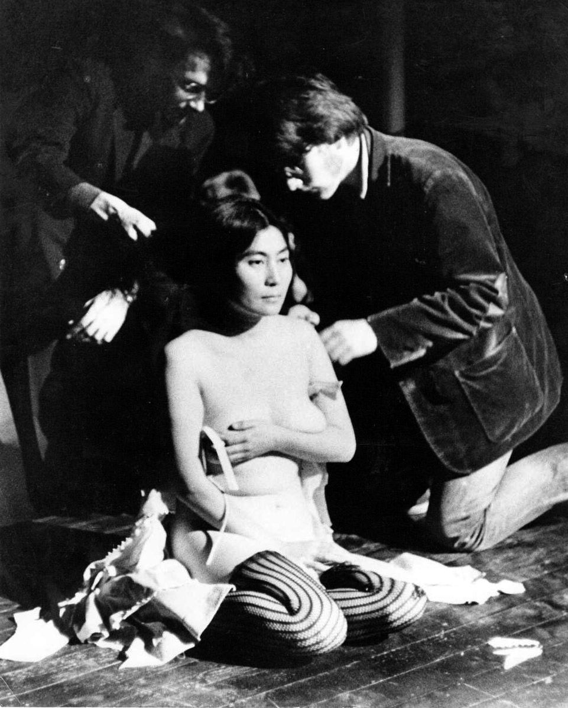
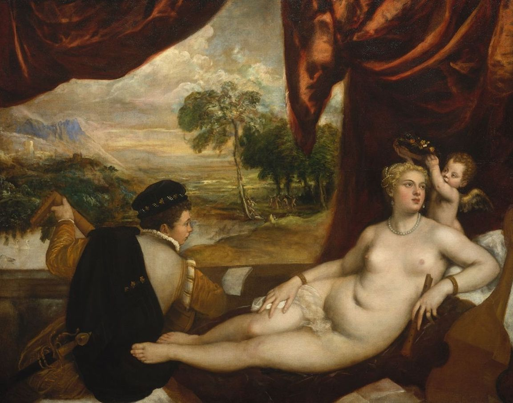

To me, these paintings show the difference in the mindset of men and women. Springtime and Oath of Love (the first and third paintings) convey how women think they are being dreamt of, or at least how they want to be dreamt of. On the other hand, Reclining Nude shows how men are dreaming of women. Berger even said that these paintings were made to satisy the spectator of the painting, not the subject of the painting itself.
This conversation reminded me of Yoko Ono's "Cut Piece". This was a performance piece where she sat alone on stage dressed in her best suit with a pair of scissors. The audience was told that they could go up to her and cut off a piece of her suit, which they would then keep. Some people cut tiny pieces off while others were bold and cut off the sleeves of her bra. The whole performance, Ono stayed motionless and expressionless. This reminds me of the European paintings where nude women are the subjects, they were made for the male gaze. It makes you think of how the audience was seeing Ono, as naked or nude? Also, how did she want the audience to view her?
 